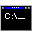

Audio Unit plugins for macOS
Our Audio Unit plugins require macOS 10.9 ("Mavericks") or higher. They run natively on Apple silicon Macs and 64-bit Intel-based Macs.
VST plugins for Windows
Our 32-bit VST plugins for Windows require Windows 95 or higher.
VST plugins for Mac OS X
Our VST plugins for Mac OS X run on Mac OS X versions 10.1 ("Puma") through 10.6 ("Snow Leopard"). They are CFM code format for PowerPC processors. They may run under the "Rosetta" environment for Intel processors, but they do not contain native x86 executable code, nor are they available in the native Mac OS X code format Mach-O.
VST plugins for old Mac OS
Our software for classic Mac OS runs on Mac OS versions 8.5 through 9.2.2.